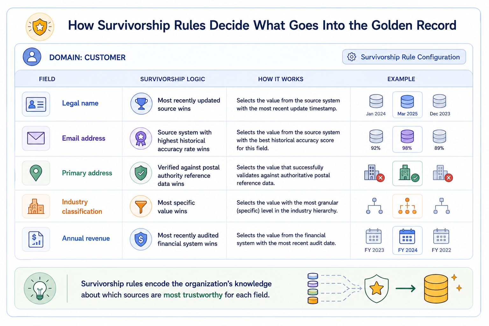
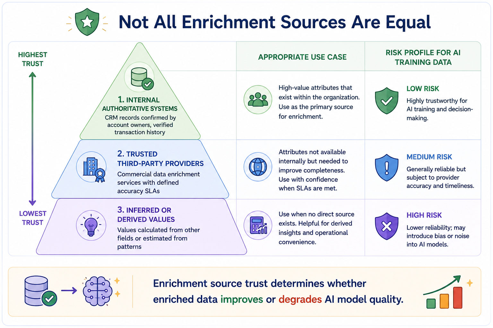
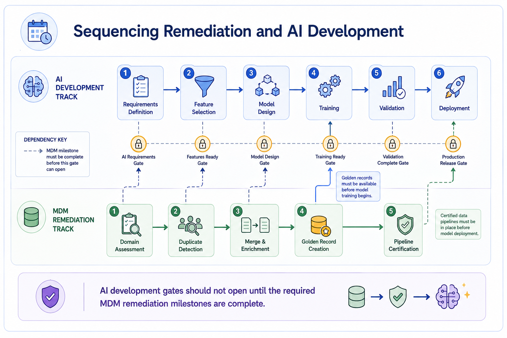
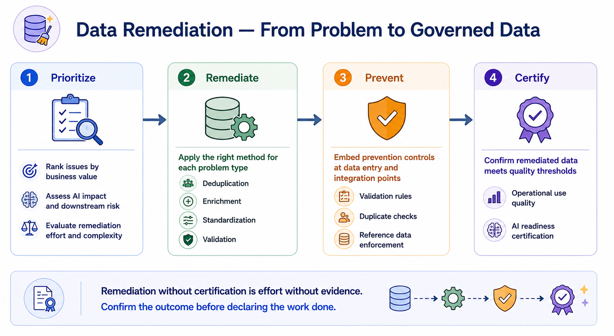

Data Remediation Approaches
Module support notes
Survivorship Rules — The Logic Behind the Golden Record
Survivorship rules are the logic that determines which field value from which source system populates the golden record when multiple records for the same entity are merged. They are one of the most consequential configuration decisions in MDM — and one of the least discussed outside of technical teams.
Getting survivorship rules right requires business input: which source system is most reliable for each field type, how recently updated values should be weighted against historically accurate sources, and whether completeness should override recency when values conflict. For AI programs, field values that become AI features should be sourced from the most accurate system for that feature type — not simply the most recently updated system, which may reflect a data entry error rather than a real-world change.
Note
Survivorship rules encode the organization's knowledge about which sources are most trustworthy for each field. Examples: legal name — most recently updated source wins; email address — source with highest historical accuracy wins; primary address — value verified against postal authority reference data wins. Each rule reflects a deliberate business decision, not a default setting.

Enrichment Sources and Trust Hierarchies
Not all enrichment sources deliver the same quality, and organizations that treat all enrichment as equivalent introduce a new source of data quality risk. Internal authoritative systems — records confirmed and maintained by the business teams responsible for them — are the most reliable enrichment source. Commercial data enrichment providers vary significantly in accuracy, coverage, and update frequency, and their fitness for AI training data should be assessed against the same quality dimensions applied to internal data.
Inferred or derived values carry the highest risk for AI training data, because they introduce model assumptions into the data layer before the AI model has been trained — potentially creating circular reasoning if the model is later used to validate the derived values it was trained on.
Warning
Enrichment source trust determines whether enriched data improves or degrades AI model quality. Using inferred or derived values as AI training features without flagging them as such risks training a model on assumptions — and then using that model to validate the assumptions it was built on. Always track enrichment source provenance alongside the enriched values themselves.

The Remediation and AI Development Timeline
One of the most valuable governance practices organizations can adopt is the establishment of formal dependency gates between MDM remediation milestones and AI development phases. Model training should not begin until the golden records for all required domains have been created and certified. Model deployment should not proceed until the pipelines delivering master data to the production model have been assessed and governed.
These gates prevent the most common and costly AI data quality failure — a model that reaches deployment with training data quality problems that were known but not resolved because the AI development timeline was not coordinated with the MDM remediation schedule.
Tip
Make MDM remediation milestones explicit gates in your AI project plan — not background work running in parallel. Golden record creation should be a named prerequisite for model training sign-off. Pipeline certification should be a named prerequisite for deployment approval. When these dependencies are invisible to the AI development team, they get skipped under schedule pressure.

Remediation is only complete when the fixed data has been certified against the quality thresholds the organization defined before assessment began.
